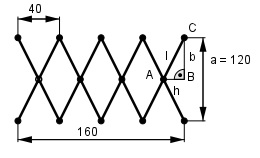

Aufgabe 197 Um welchen Betrag verlängert sich das Gelenk- system, wenn a auf ein Drittel verkürzt wird?

Zustand vor dem Ausklappen: 40 mm h = ------- = 20 mm 2 a 120 mm b = --- = -------- = 60 mm 2 2 Satz von Pythagoras im Dreieck ABC: l2 = 202 + 602 = 4 000 Zustand nach dem Ausklappen: a 120 mm aneu = --- = --------- = 40 mm 3 3 aneu 40 mm bneu = ------ = ------- = 20 mm 2 2 Satz von Pythagoras im Dreieck ABC: l2 = h2 + b2 | -b2 h2 = l2 - b2 = 4 000 – 400 = 3600 |√ h = 60 mm Neue Gesamtlänge = 4 * 2 * h = 8 * 60 mm = 480 mm Verlängerung = = neue Gesamtlänge – alte Gesamtlänge = = 480 mm – 160 mm = 320 mm